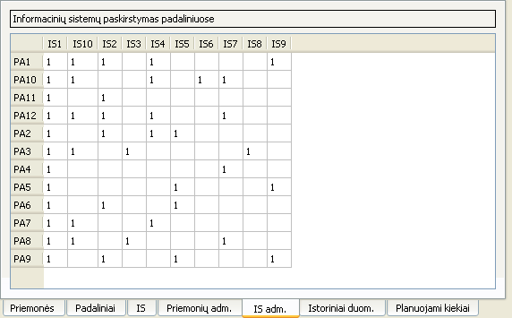

Informacinių sistemų administravimo sąsaja

Naudojantis šia sąsaja galima:
- Nustatyti kurios informacinės sistemos naudojamos kiekvienai paramos priemonei administruoti
Šioje sąsajoje gali būti įvesti tik 1 arba 0 (1, jei paramos priemonei administruoti naudojama informacinė sistema, 0 - nenaudojama informacinė sistema)